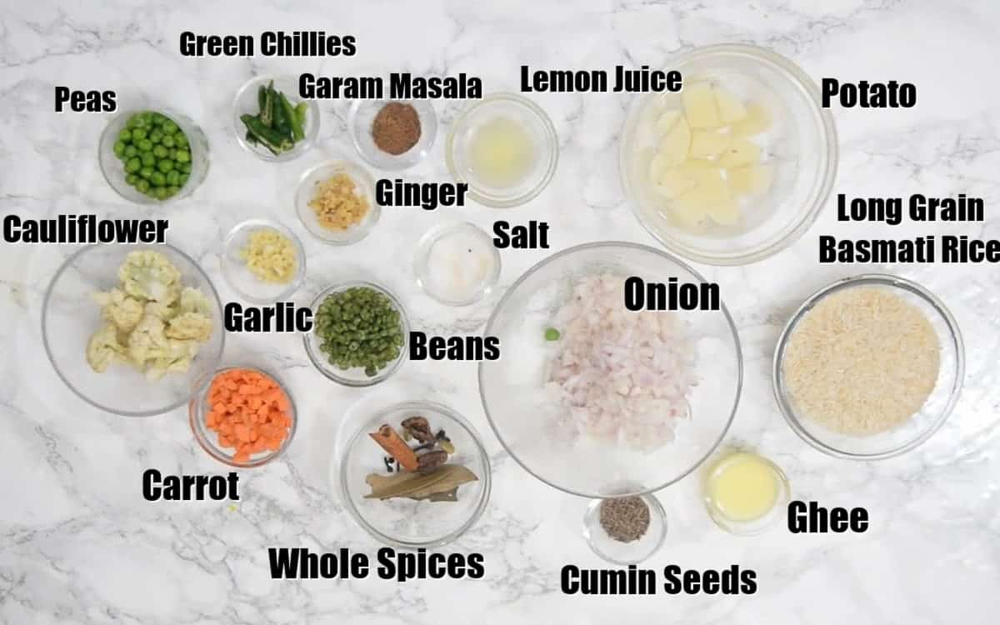

Recipe Details
This restaurant-style Veg Pulao is a delicious medley of rice, spices, and vegetables.
Also known as Vegetable Pulao Pulav or Indian Pulao, this North Indian dish
is very simple and easy to make.
Ingredients
Instructions
Wash the rice and soak it in enough water for 30 minutes.
Add the whole spices in mortal pestle and grind them a little.
Crushed whole spices.
Heat ghee in a pan. Once the ghee is hot, add whole spices and let them crackle for a few seconds.
Whole spices added in hot ghee.
Add onion and fry until they turn slightly brown.
Onion added in the pan.
Now add ginger, garlic and green chilli and fry for a minute.
Ginger, garlic and green chilli added in the pan.
Add carrot, beans, cauliflower, peas and potato and cook for a minute.
Veggies added in the pan.
Drain the rice and add it in the pan. Add 3 cups of water, salt, garam masala powder,
and lemon juice, and cover and cook on low heat until all the water is absorbed
and the rice is cooked.
Rice, water, salt, lemon juice and garam masala powder added in the pan.
Once the rice is cooked, switch off the stove and fluff the rice using a big spoon and serve.
Download this Recipe by clicking on Download button below

Download